分娩中：送出仔猪
分娩中母猪记录 → Actions → Foster piglets → Send piglets → 选接收母猪 → 选仔猪 → Send → 回记录
寄养属于批准范围；Actions 中的 Care / 身份和 Reconcile 是待撤回内容。

起点：分娩中母猪记录
当前有 9 只活仔，从记录底部的 Actions 进入。
当前原型 · 390 × 844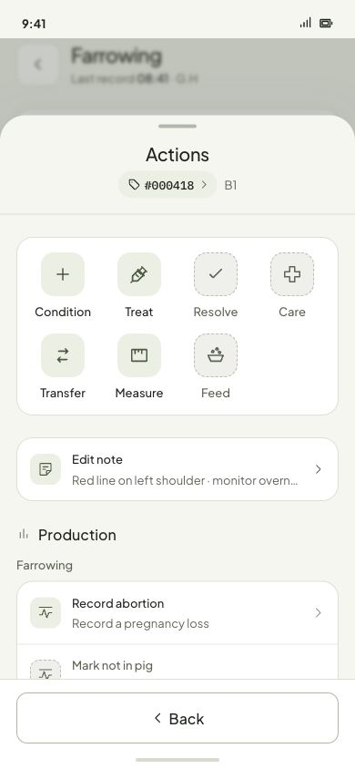
母猪 Actions：通用操作区
这是单头母猪的操作，和单元底部 Actions 是两个入口。
当前原型 · 390 × 844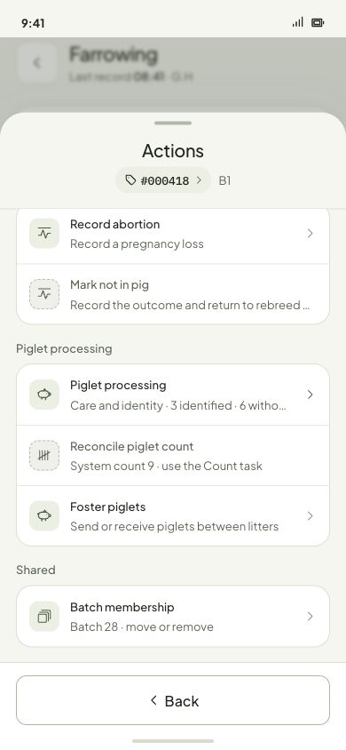
向下看 Production 区
当前 Foster 混在 Piglet processing 分组中。Care / 身份及 Reconcile 不应因此被当成分娩批准范围。
当前原型 · 390 × 844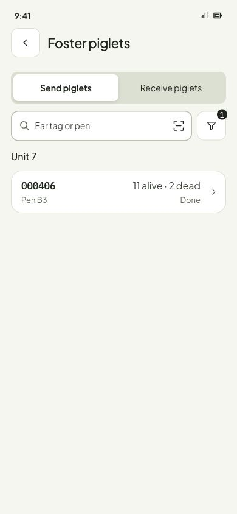
先选 Send，再选接收母猪
有 Send / Receive 切换；搜索、扫描和筛选用于找另一头母猪。
当前原型 · 390 × 844
再选送出的仔猪
已勾 2 只有编号的仔猪，并选 1 只无编号，共 3 只；未创建或修改身份。
当前原型 · 390 × 844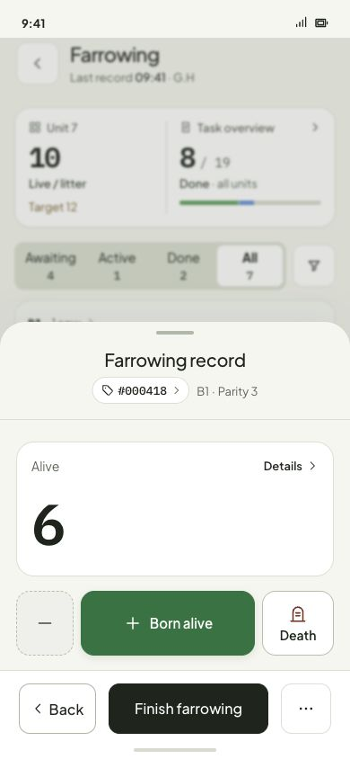
送出后回看分娩记录
保存后回 Actions，再 Back 到记录；当前活仔由 9 变成 6。
当前原型 · 390 × 844分娩中：接收仔猪
同一个母猪 Actions → Foster piglets → Receive piglets → 选来源母猪 → 选仔猪 / 数量 → Receive
独立样例重新从 9 只活仔开始；这里展示为什么不能直接删除母猪 Actions 的寄养入口。
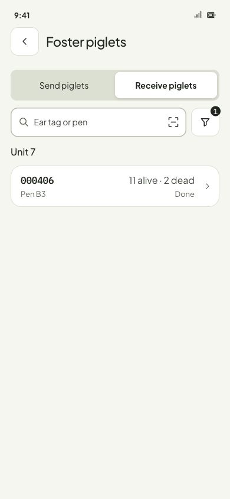
切换到 Receive
选择仔猪来自哪头母猪。
当前原型 · 390 × 844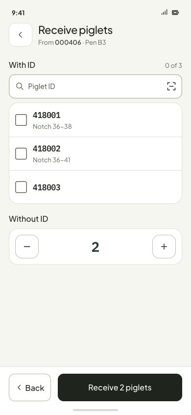
选来源母猪的 2 只无编号仔猪
页头写 From 000406，按钮写 Receive 2 piglets。
当前原型 · 390 × 844
接收后回看记录
保存后当前活仔由 9 变成 11；与 A 组独立，不累计。
当前原型 · 390 × 844结束分娩后：从 Piglets 寄养送出
已结束母猪记录 → Piglets → 先选仔猪 → Actions · N → Foster → 选接收母猪 → 确认 → Send
这里已经选好要送出的仔猪，所以没有 Send / Receive 切换。
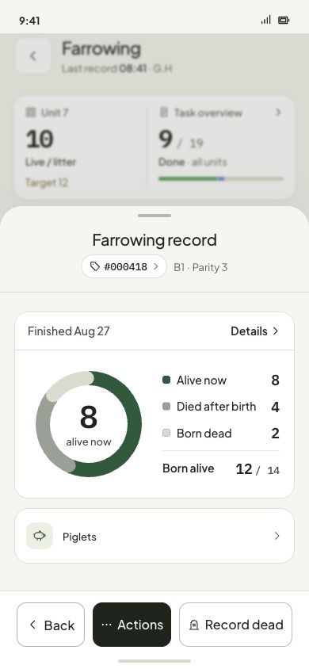
起点：已结束分娩记录
当前 8 只活仔；卡片下有 Piglets，底部另有母猪 Actions 和 Record dead。
当前原型 · 390 × 844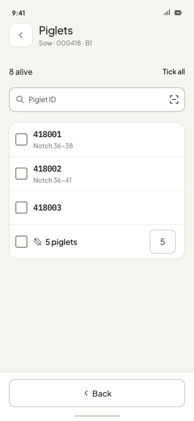
打开现有仔猪列表
逐头已有编号 + 5 只无编号；搜索 / 扫描用于选中已有仔猪。
当前原型 · 390 × 844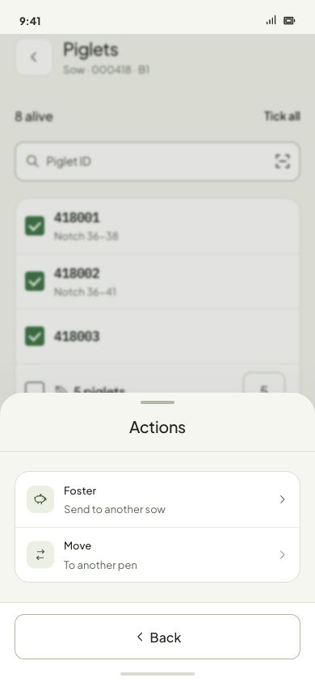
选中 3 只后的 Actions
只有 Foster 和 Move，没有 Care、编辑身份或数量核对。
当前原型 · 390 × 844
选择接收母猪
页面标题直接是 Send piglets；没有方向切换。
当前原型 · 390 × 844
确认送给谁、送哪 3 只
确认页展示接收母猪、栏位和已选择的仔猪编号。
当前原型 · 390 × 844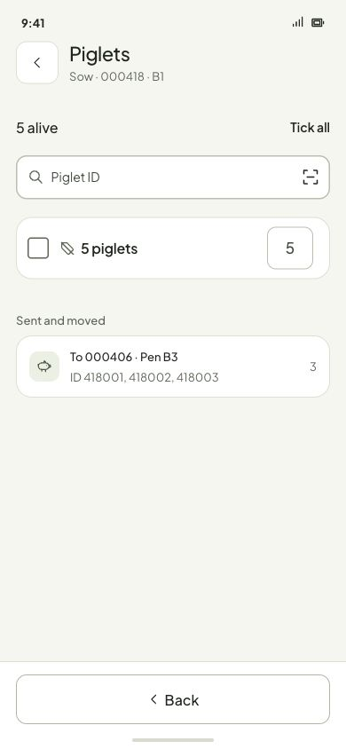
保存后回到 Piglets
剩 5 只；Sent and moved 中保留送出 3 只的去向和编号。
当前原型 · 390 × 844结束分娩后：仔猪移栏
已结束记录 → Piglets → 选 2 只 → Actions → Move → 选目标栏
独立样例重新从 8 只活仔开始。Move 移的是选中的仔猪，不是母猪 Transfer。
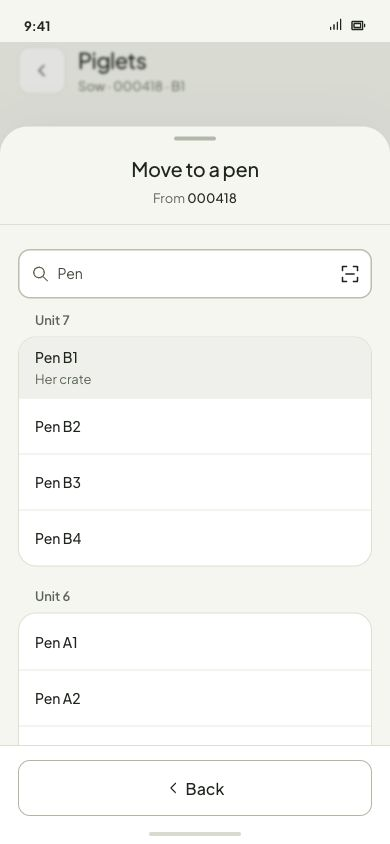
选择目标栏
原栏 B1 禁用，可搜索栏位或扫描栏牌；本样例选 B2。
当前原型 · 390 × 844
移栏后回到 Piglets
剩 6 只；Sent and moved 中记录 2 只移到 Unit 7 的 B2。
当前原型 · 390 × 844母猪死亡后：剩余仔猪寄养
母猪死亡记录 → Piglets · Foster or move → 选仔猪 → Actions → Foster / Move
母猪自己的操作置灰，仔猪仍可处理；未移走的继续留原栏人工哺育。
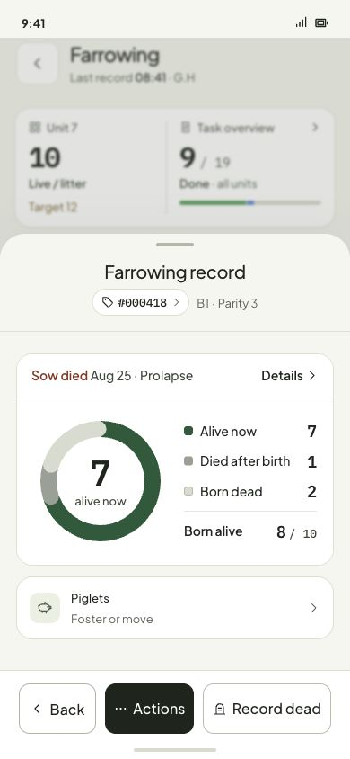
起点：Sow died 记录
本组死亡样例有 7 只活仔，Piglets 带 Foster or move 说明。
当前原型 · 390 × 844
选仔猪后的 Actions
仍然只有 Foster / Move；本例选了 2 只有编号的仔猪。
当前原型 · 390 × 844
选择接收母猪
只送出，不向死亡母猪接收仔猪。
当前原型 · 390 × 844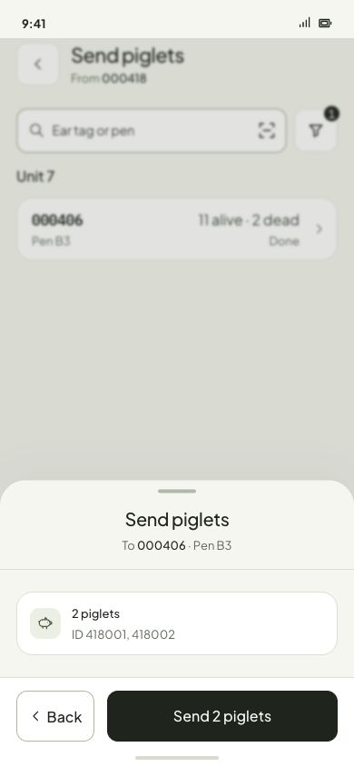
确认寄养 2 只
确认目标与已有编号。
当前原型 · 390 × 844
保存后仍留 5 只
送出 2 只，其余留着；不额外要求 Keep 或 Allocate。
当前原型 · 390 × 844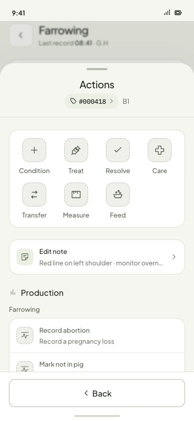
母猪自己的 Actions
健康、日常和生产操作置灰；备注仍可用。仔猪走 Piglets 的独立入口。
当前原型 · 390 × 844结束分娩后的活母猪：仍可接收
已结束母猪记录 → 母猪 Actions → Foster piglets → Receive piglets
与 C 组的 Piglets → Foster 起点不同；删除这个入口前必须给接收明确的落点。

已结束母猪 Actions 的现状
Record abortion / Mark not in pig 已禁用；Foster 仍可用。Care / 身份及 Reconcile 是待撤回内容。
当前原型 · 390 × 844
接收方向仍可选择
活母猪已结束分娩也可通过这个入口接收；此图展示方向页，未提交接收。
当前原型 · 390 × 844待修正：死亡登记对身份页产生依赖
已结束记录 → Record dead；对照当前分支和 main 同样的 +5 死亡草稿
本轮回归。总活仔 8，只因 5 只无编号就阻止继续登记核心分娩死亡。
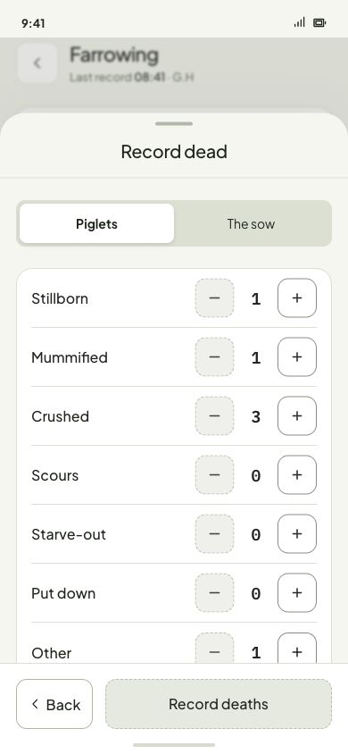
直接从记录进入 Record dead
分娩自己的死亡登记入口。
当前原型 · 390 × 844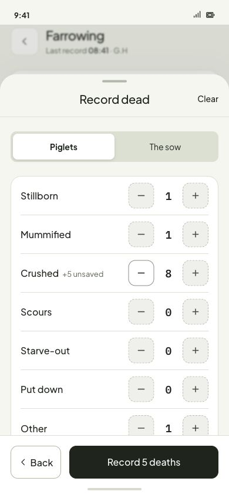
当前分支：+5 后加号全部禁用
+5 是本次新增死亡，Crushed 的 8 是既有 3 加新增 5；不是总活仔变成了 8。
当前原型 · 390 × 844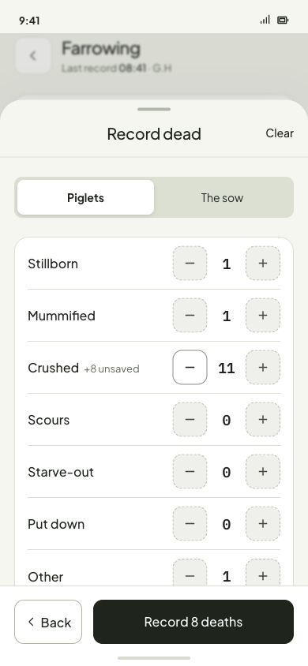
main：同样 +5 时仍可继续
同样活仔 8、同样 +5 草稿；main 的加号仍可用。此图来自历史 main 版本。
main 对照 · 390 × 844待修正：流产后仍有活仔的断点
分娩中 → 母猪 Actions → Record abortion → Save → Room 流产行 → 记录 / Actions
既有缺口，本轮实走确认。应补送出 / 移栏的仔猪管理路径，不自动扩展该母猪接收资格。

当前流产表单
样例尚有 9 只活仔，提示却一律写 Sow leaves this batch；需澄清有活仔时的条件。
当前原型 · 390 × 844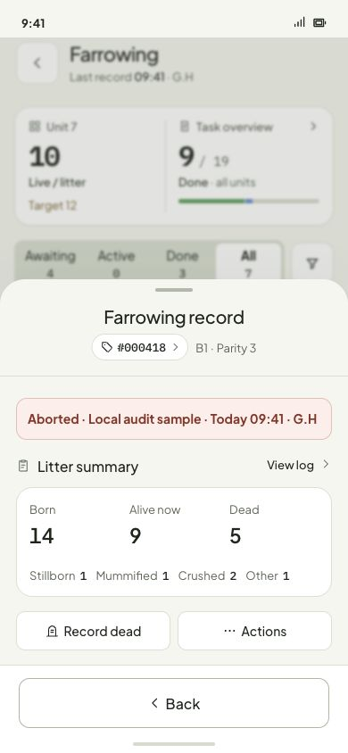
流产记录没有 Piglets
9 只活仔仍在，但页面只有汇总、日志、Record dead 和 Actions。
当前原型 · 390 × 844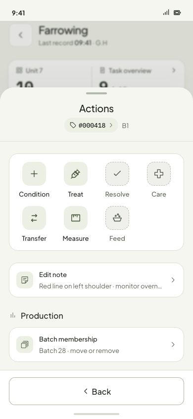
Actions 也没有 Foster
当前生产区只剩共享 Batch membership；不能把这条链路写成可寄养。
当前原型 · 390 × 844单元 Actions：7 项通用操作
Room 底部 Actions → Condition → Choose pigs → Next → 共享表单
这是 Pigs in this unit。Feed / Transfer 的后续中断在复核清单中单列。
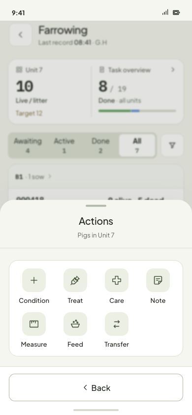
单元通用菜单
Condition / Treat / Care / Note / Measure / Feed / Transfer；没有生产任务操作。
当前原型 · 390 × 844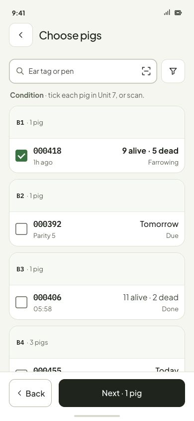
选择本单元的猪
本例勾选 000418；也可以选择本单元不在分娩任务中的活猪。
当前原型 · 390 × 844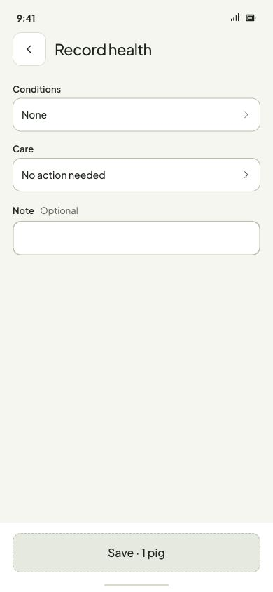
进入共享健康表单
从通用 Condition 进入；本组停在表单，没有提交健康记录。
当前原型 · 390 × 844待产：尚未记录一窝
Room → 待产母猪 → 分娩记录 / 母猪 Actions
没有出生记录不能 Finish，也不显示适用于已记录仔猪的操作。

待产母猪记录
活仔 0；可以开始 + Born alive、报告死亡，Finish 暂不可用。
当前原型 · 390 × 844
待产母猪 Actions
分娩结果操作有 Record abortion、Mark not in pig；Batch membership 为共享猪档案操作。
当前原型 · 390 × 844